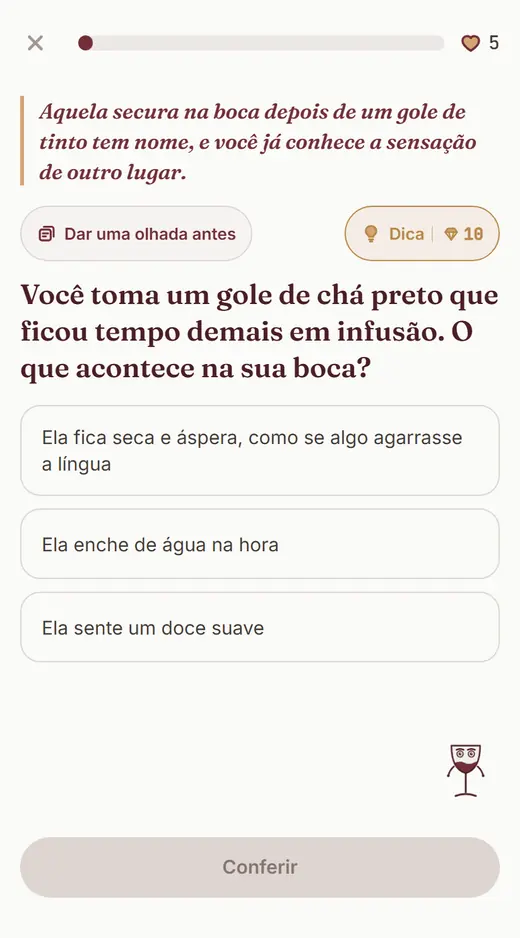
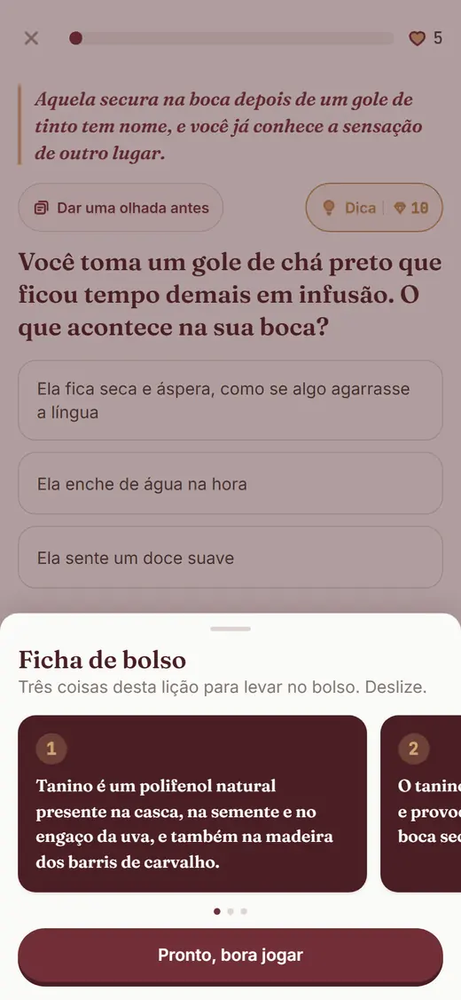

Para quem fica quieto quando a mesa fala de vinho
Tudo o que você sempre quis saber de vinho e nunca teve coragem de perguntar.
30 lições curtas traduzem cada palavra do vinho em comparação de cozinha. Sem julgamento, sem aula chata, grátis no beta.
Vem treinar com a gente Grátis no beta, 2 minutos por lição, direto no navegador do celular.

"Estava com uns amigos tomando um vinho, e eles não paravam de comentar sobre a safra, o tipo de uva. Eu, sem entender nada, fiquei perdido na conversa."
Comentário real de quem aprende vinho na internet, anonimizado, levemente editado para leitura.
A conversa anda e você sorri
Alguém elogia a safra. Outro diz que este é "mais encorpado que o da outra vez". Você concorda com a cabeça, toma um gole e torce para ninguém pedir sua opinião. Não falta vontade de participar: falta a tradução. Como escreveu outra pessoa no mesmo fio: "Tanino? Que gosto tem isso? Amargo? Azedo?"
Aqui vai um segredo do mundo do vinho: cada uma dessas palavras descreve uma sensação simples, que você já conhece de outro lugar da sua vida. O chá preto que passou do ponto. A manga bem madura. A diferença entre leite desnatado e creme de leite. Quem te explica assim, uma vez, resolve para sempre.
Encorpado, por exemplo: é o peso do vinho na boca. Pense na escada que vai da água ao creme de leite. Vinho encorpado fica no degrau de cima. Pronto, a palavra é sua.
É assim que o Treine seu Paladar ensina: cada termo chega traduzido no primeiro contato, em uma frase de gente, e você pratica respondendo perguntas sobre sensações que já estão na sua memória. São lições de 2 minutos, e errar faz parte do treino: o primeiro tropeço de cada lição não custa nada, e a explicação vem na hora, com calor humano, sem tom de professor.
No fim de cada lição, o app resume o que você agora sabe e ainda entrega um "para contar na mesa": um fato curioso e verificado, pronto para a próxima conversa. De gole em gole, as palavras deixam de ser código dos outros e viram vocabulário seu.
Como funciona o treino
-
Cada palavra chega com tradução
Tanino, acidez, corpo, seco e suave: tudo explicado em uma frase, com comparação da sua cozinha.
-
Você pratica sem plateia
Perguntas curtas, no seu celular, no seu tempo. Ninguém vendo, ninguém julgando, primeiro erro grátis.
-
A ficha de bolso vai com você
Três ideias por lição, resumidas para revisar na fila ou cinco minutos antes do jantar.
Prova honesta, em números do produto
Contamos só o que existe no app hoje. Sem depoimento de encomenda, sem estrela inventada: estamos em beta, e o beta é grátis.
- 30
- lições na trilha, com fatos verificados um a um
- 12 mil+
- vinhos catalogados; 10 mil e tantos alimentam o treino
- 1 frase
- de tradução para cada termo, no primeiro contato
- 2 min
- por lição. Dá para treinar antes do jantar
O treino, do jeito que ele aparece na sua tela


Na próxima conversa, você entra.
Trinta lições separam o sorriso sem graça da opinião dita em voz alta. Comece pela primeira hoje: leva 2 minutos e não custa nada durante o beta.
Vem treinar com a gente